Quickly modify a texture on your avatar
Once you've imported your Live2D avatar in Animaze Editor, you can easily modify its texture directly by opening it in an image editor like Photoshop or Gimp. This is great for making quick color adjustments or in our example adding a small badge to her shirt.
For larger changes, we recommend you use the Cubism Editor. Learn more about changing materials in the Cubism Editor here.
Here is the simplest way to modify your avatar and see the changes almost instantly:
Go to the Animaze Editor install folder on your PC:
1. Go to the Animaze Editor install folder on your PC
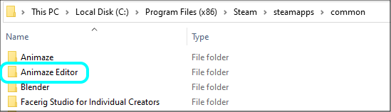
2. Go to Data folder and open the Resources folder
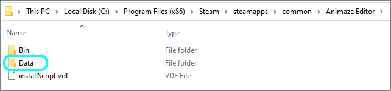
3. Open the avatar’s folder and navigate in the Hiyori.2048 folder containing its textures (the folder is the one generated when you export the model from Cubism. Read more here).
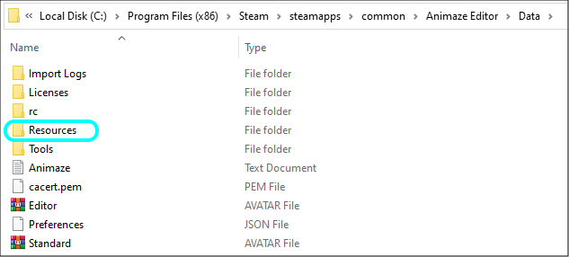
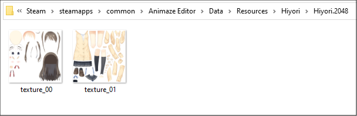
4. Open the texture in the editor of your choice and draw something
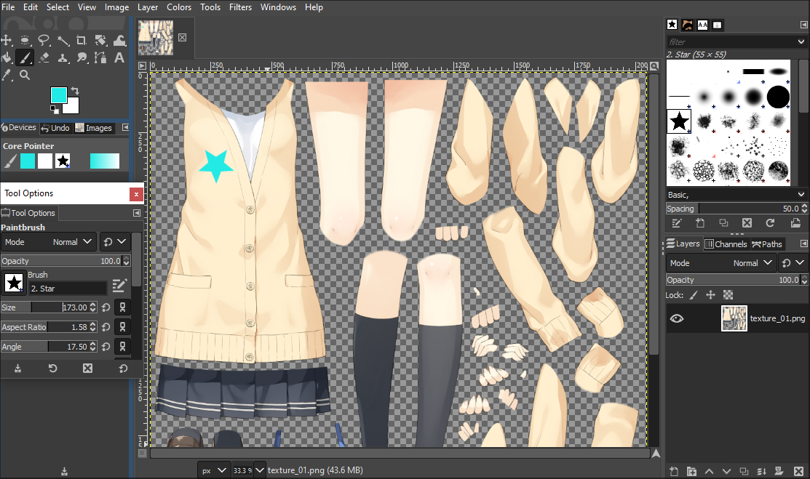
5. Save the texture when you are done editing, without changing its name or location (Animaze Editor will detect the changes automatically).
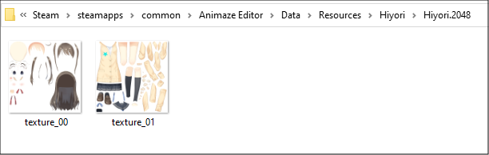
6. Animaze Editor will detect the changes, as mentioned above, and a confirmation pop-up will prompt you to re-import the files - click Yes.
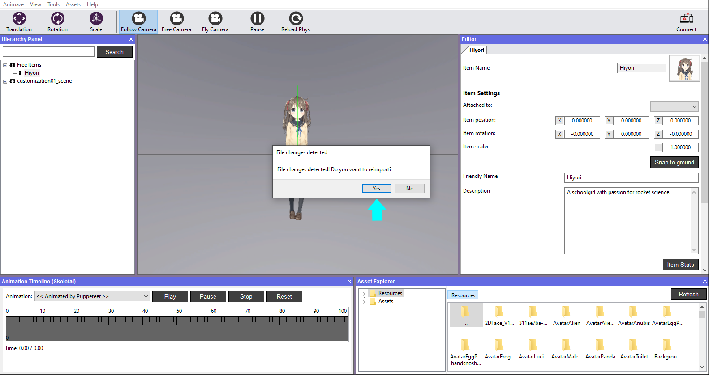
7. To see the changes, go to the Assets menu and select Load Avatar.
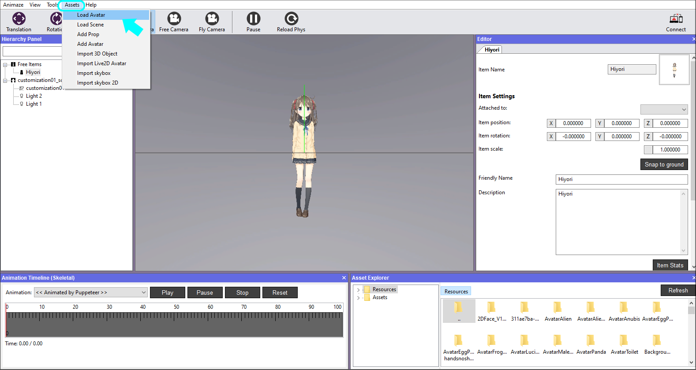
8. Hit the Refresh button, then search and select Hiyori.
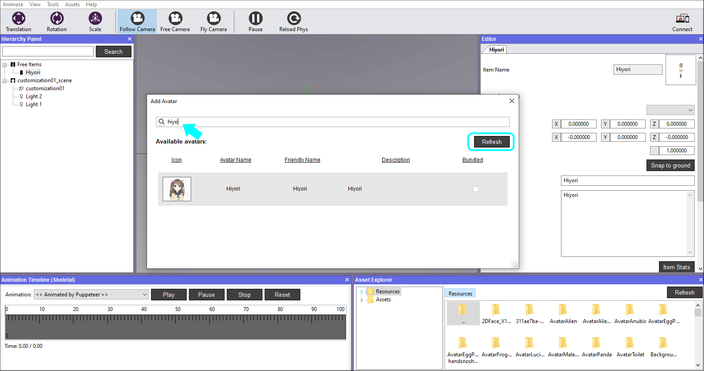
9. The avatar should now display the modifications you made!
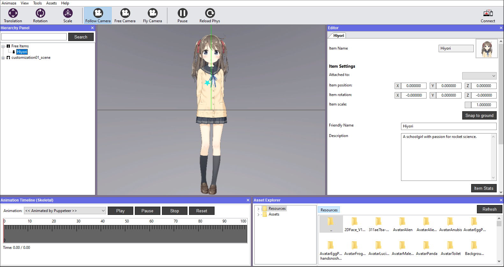
10. Save the avatar in the Hierarchy Panel when you are done
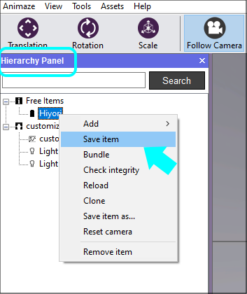
That’s it!